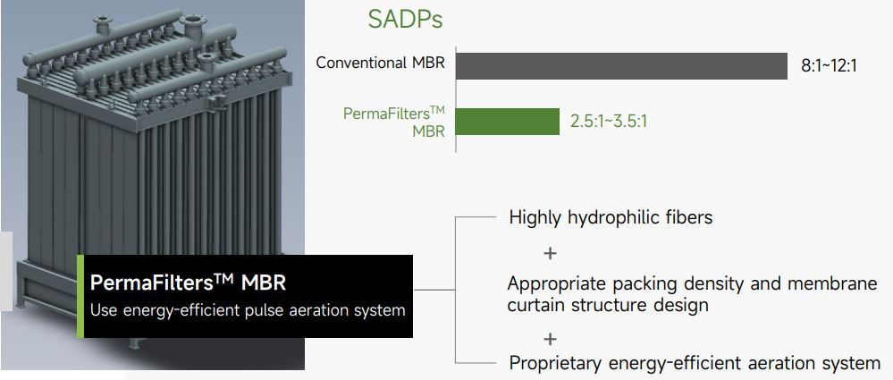

Perma Filter · 承信代理
MBR 浸沒式膜組件
市政與工業廢水 MBR 系統的固液分離單元

產品在流程中的角色
Perma Filter MBR 浸沒式膜組件
承信代理 Perma Filter MBR 浸沒式膜組件，用於市政與工業廢水的膜生物反應器系統。VI 3384-HS 採 PVDF 中空纖維膜，負責生物處理流程中的固液分離。新建或汰換時，可依膜槽、曝氣配置與操作需求洽詢。
- VI 3384-HS PVDF 中空纖維膜組件
- 配置於 MBR 流程，分離生物污泥與處理水
- 新建與汰換配置需核對膜槽及曝氣介面
Perma Filter 型號系列
共 1 筆型號／項目